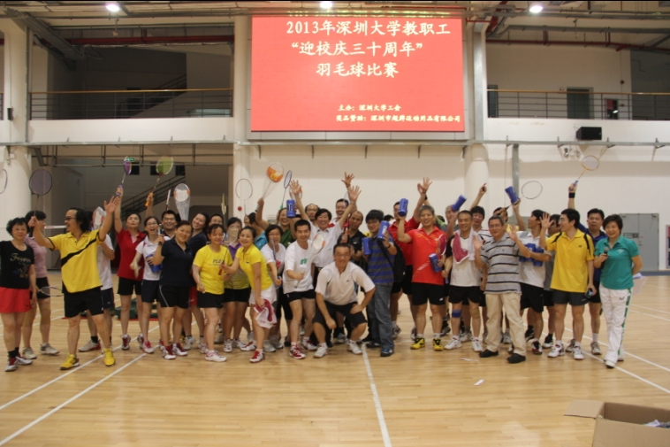

深圳大学工会自成立以来一直坚持良好的民主组织制度，坚持执行工会会员代表大会的决议和上级工会的决定。1992年召开了首届教职工暨工会会员代表大会，自此“双代会”制度得到不断的发展和完善。民主管理与民主监督在学校的工作中发挥越来越大的作用，调动了广大教职工投身一流大学建设的工作热情，促进了领导决策的民主化与科学化，维护了广大教职工的合法权益。“双代会”设有教学科研工作委员会、提案专门工作委员会、福利财经工作委员会、教职工权益保障委员会、评议监督工作委员会五个专门工作机构，采取同一代表、兼有两种身份、同时开会的运作方式，每年召开一次全体代表大会，重大事宜由两会常委工作例会讨论，日常工作由工会办公室承担。
深圳大学工会积极维护职工的合法利益和民主权益。校工会是党委领导下的群众组织，是党联系群众的桥梁和纽带，是教职工之家。成立至今20多年来，在上级工会和党委领导下，认真坚持以邓小平理论为指导，努力贯彻“三个代表”重要思想，全心全意为教职工服务。校工会通过工代会、妇委会的作用，推进校务公开和民主管理，使广大教职工的意见和建议能够得到合理的采纳，从而维护了他们的民主权利和切身利益。另外了解到我校合同制劳务工比较多，而且主要分布在服务第一线的安全保卫、后勤保障及相关职能部门，他们在为教学科研工作及师生服务等方面起着不可替代的重要作用，可是受种种因素的影响，他们的收入低、福利待遇差，工作辛苦。为了切实维护合同工的合法权益，校工会在着手起草《合同工加入工会暂行规定》，以构建和谐的劳动关系为龙头，围绕劳动关系的建立、运行、监督、调处以及福利保障等环境积极开展工作。充分体现了以人为本的工作理念。
深圳大学工会积极开展“送温暖工程”，为教职工搞好集体福利。在关心教职工的学习、健康、生活，解决教职工的思想问题和生活中的实际困难方面，校工会做了大量的工作，如：成立单身交友俱乐部，为单身教职工做好事；主动为需要帮助的困难职工解决医疗和福利补助；关心妇女身心健康，开展妇女讲座，连续三年坚持进行妇女专项体检，购买妇女安康保险；解决教职工子女上学以及校内劳务工劳资纠纷和社保等关系到职工切身利益的问题；组织教工合唱团活动；成立舞蹈培训班；组织教工诗歌朗诵比赛；开展篮球、乒乓球、羽毛球等各项比赛。得到了全校教职工的认可和好评。
近年来，校工会把加强师德师风建设作为精神文明建设的重点，通过开展各种创建评优活动，提高职工的思想道德素质。我们积极开展“三八”红旗手、“巾帼英雄”、“十大书香家庭”、“模范职工之家”等系列评优活动，让“树师德形象，创文明校园”的思想意识深入人心。并把我校近年涌现的先进人物，通过广播、校报、网络、演讲等形式，在学校进行“敬业、育人、奉贤、师德”为主题的系列宣传教育。我校工会先后被评为深圳市和广东省的模范之家，多次被深圳市评为先进集体和先进职工之家。